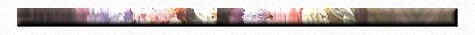

|

 Vers l'Asie par
l'ouest...
Vers l'Asie par
l'ouest...
Une date charnière dans l'histoire occidentale: le
29 mai 1453, la chute de Constantinople entre les mains des Turcs
ottomans. C'est la fin de la longue période historique appelée
Moyen Âge. Les derniers savants et artistes byzantins se réfugient
en Italie où ils seront à l'origine de la Renaissance. En France,
s'achève la guerre de Cent Ans qui est le dernier conflit de type féodal.
suite
du texte>>>
La France entre enfin
dans la course...
Le chemin vers l'Asie serait-il entre cette Floride
découverte par Ponce de Leon pour le compte de l'Espagne et les "terres neuves" de John
Cabot, commandité par l'Angleterre? suite
du texte>>>
Québec au temps de
Mathieu Choret...
Les historiens
d'avant, très catholiques, ont occulté le fait que la ville de Québec a
été fondée par un huguenot, Samuel de Champlain. En effet, ceux
d'aujourd'hui pensent qu'il y a de fortes probabilités que Champlain
ait été protestant, en tout cas son patron l'était. suite
du texte>>>

SI VOUS
AUSSI ÊTES UN
DESCENDANT DE MATHIEU, OU SI VOUS AVEZ DES COMMENTAIRES
SUR CE SITE, LAISSEZ UN PETIT MOT DANS MON
LIVRE D'OR.
ÉCHANGE
DE LIENS OU DE BANNIÈRES AYANT TRAIT À LA GÉNÉALOGIE DE
MATHIEU ET DE SES DESCENDANTS.

|